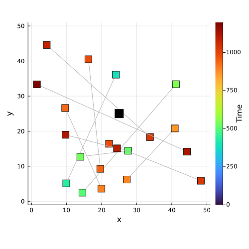
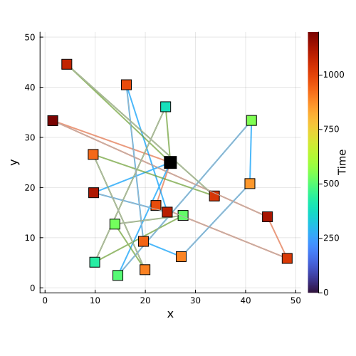

Stochastic Vehicle Scheduling
Assign vehicles to cover a set of tasks while minimizing costs under stochastic delays: the DFL agent learns to predict adjusted costs that implicitly hedge against uncertainty.
using DecisionFocusedLearningBenchmarks
using Plots
b = StochasticVehicleSchedulingBenchmark(; nb_tasks=10)StochasticVehicleSchedulingBenchmark(10, 10)Observable input
Each instance is a city with task locations and scheduled times. Task spatial positions and scheduled times are observable at inference time. store_city=true is required to visualize the map (not needed for training):
sample = generate_dataset(b, 1; store_city=true)[1]
plot_context(b, sample)
A training sample
Each sample is a labeled triple (x, θ, y):
x: 20-dimensional feature vector per edge, encoding schedule slack and travel timesθ: adjusted edge costs (training supervision only, hidden at test time)y: binary assignment (y[(u,v)] = 1if a vehicle travels edge(u, v)in the schedule)
Unlike static benchmarks, y labels are not available by default and must be attached via a target_policy (e.g., the deterministic VSP solver). Routes are visualized in the untrained policy section below.
Untrained policy
A DFL policy chains two components: a statistical model predicting adjusted edge costs:
model = generate_statistical_model(b) # linear map: task features -> adjusted edge costsChain(
Dense(20 => 1; bias=false), # 20 parameters
vec,
) and a maximizer solving the deterministic VSP given those costs:
maximizer = generate_maximizer(b) # deterministic VSP solver (HiGHS MIP)DecisionFocusedLearningBenchmarks.StochasticVehicleScheduling.StochasticVechicleSchedulingMaximizer{typeof(DecisionFocusedLearningBenchmarks.Utils.highs_model)}(DecisionFocusedLearningBenchmarks.Utils.highs_model)The untrained model predicts random edge costs; the resulting schedule is arbitrary:
θ_pred = model(sample.x)
y_pred = maximizer(θ_pred; sample.context...)
plot_sample(b, DataSample(sample; θ=θ_pred, y=y_pred))
Problem Description
Overview
In the Vehicle Scheduling Problem (VSP), we consider a set of tasks $V$. Each task $v \in V$ has a scheduled beginning time $t_v^b$ and end time $t_v^e$, with $t_v^e > t_v^b$. We denote $t^{tr}_{(u,v)}$ the travel time from task $u$ to task $v$. A task $v$ can follow $u$ only if:
\[t_v^b \geq t_u^e + t^{tr}_{(u,v)}\]
An instance of VSP can be modeled as an acyclic directed graph where nodes are tasks and edges represent feasible successions. A solution is a set of disjoint paths such that all tasks are fulfilled exactly once to minimize total costs.
In the Stochastic VSP (StoVSP), after the scheduling decision is set, random delays propagate along vehicle tours. The objective becomes minimizing base costs plus expected total delay costs over scenarios.
Mathematical Formulation
Variables: Let $y_{u,v} \in \{0,1\}$ indicate if a vehicle performs task $v$ immediately after task $u$.
Delay Propagation: For each task $v$ in scenario $s$:
- $\gamma_v^s$: intrinsic delay of task $v$
- $d_v^s$: total accumulated delay
- $\delta_{u,v}^s = t_v^b - (t_u^e + t^{tr}_{(u,v)})$: slack time
\[d_v^s = \gamma_v^s + \max(d_u^s - \delta_{u,v}^s,\; 0)\]
Objective:
\[\min_{y} \; \sum_{(u,v)} c_{u,v} \, y_{u,v} + \mathbb{E}_{s \in S}\!\left[\sum_v C_d \, d_v^s\right]\]
Key Components
StochasticVehicleSchedulingBenchmark
| Parameter | Description | Default |
|---|---|---|
nb_tasks | Number of tasks per instance | 25 |
nb_scenarios | Number of scenarios for objective evaluation | 10 |
Instance Generation
Each instance simulates a geographic city with depots and task locations. Tasks have realistic scheduled start/end times. Scenarios are random intrinsic delays $\gamma$ drawn from a Log-Normal distribution. Feature vectors are 20-dimensional.
Baseline Policies
| Policy | Description |
|---|---|
svs_deterministic_policy | Solves the deterministic VSP, ignoring delays |
svs_saa_policy | SAA via column generation over $K$ scenarios |
svs_saa_mip_policy | Exact SAA via compact MIP formulation |
svs_local_search_policy | Heuristic local search over sampled scenarios |
DFL Policy
\[\xrightarrow[\text{Features}]{x \in \mathbb{R}^{20}} \fbox{Linear model $\varphi_w$} \xrightarrow[\text{Predicted cost}]{c} \fbox{Deterministic VSP solver} \xrightarrow[\text{Routes}]{y}\]
By training end-to-end with the deterministic solver, the linear model learns adjusted costs $c$ that implicitly account for expected stochastic delays, while keeping the fast deterministic solver at inference time.
Model: Chain(Dense(20 -> 1; bias=false), vec): predicts one adjusted cost per edge.
Maximizer: StochasticVehicleSchedulingMaximizer: HiGHS MIP solver on the deterministic VSP instance.
Full details on this problem can be found in Learning to Approximate Industrial Problems by Operations Research Classic Problems
This page was generated using Literate.jl.